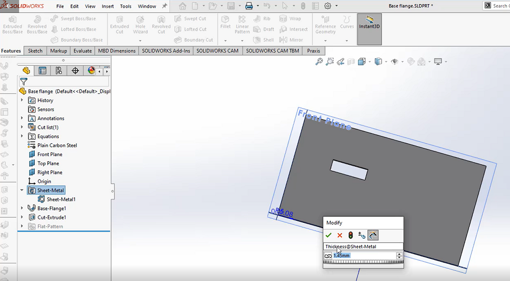
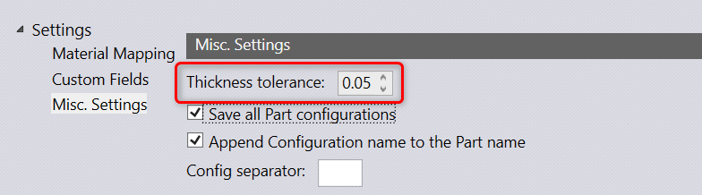
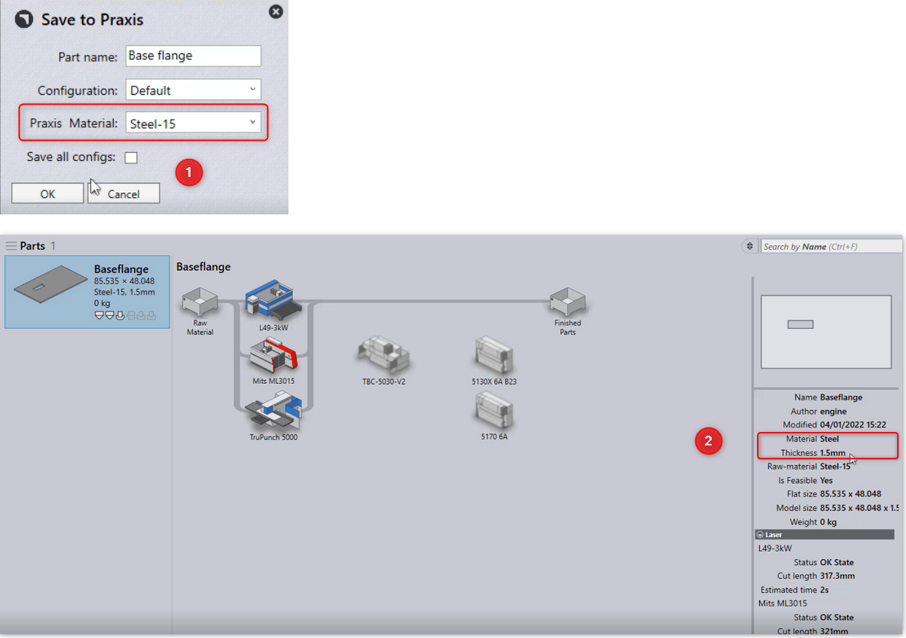

The mapping defined here is used to lookup the Praxis material from the SolidWorks material assigned to the Part. Thickness Fudge is another setting which affects the material lookup. This is the tolerance used to match the model thickness with the raw-material thickness.
For instance, load a part with thickness 1.45mm in solidworks and set tolerance to 0.05


Upon saving the part to praxis, the thickness + fudge is matched with the material in praxis.
